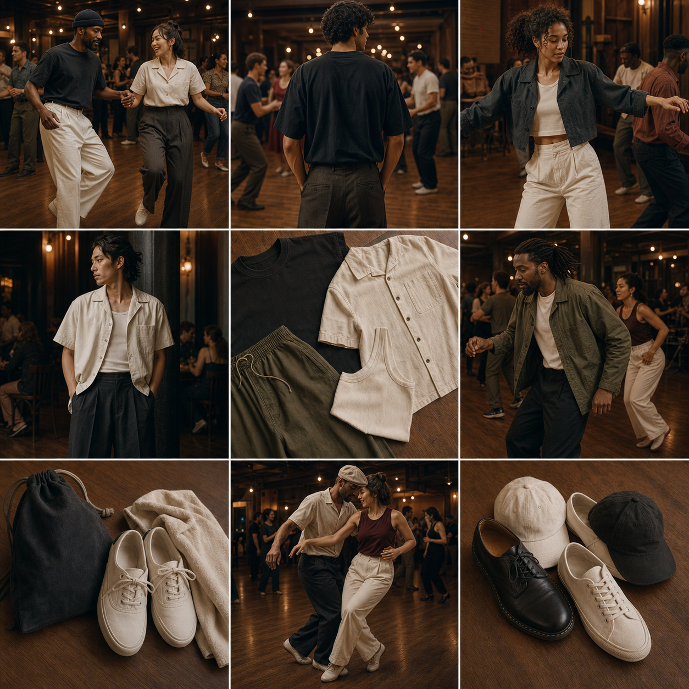
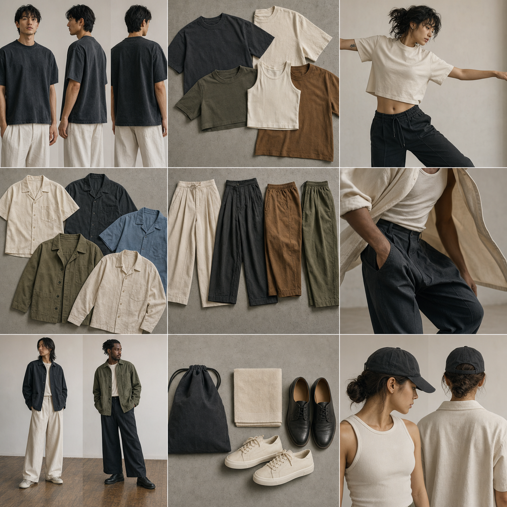
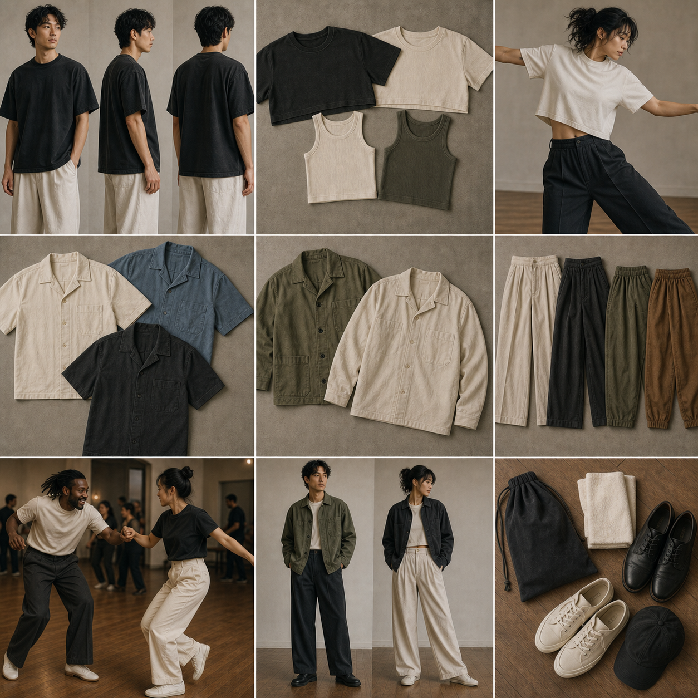
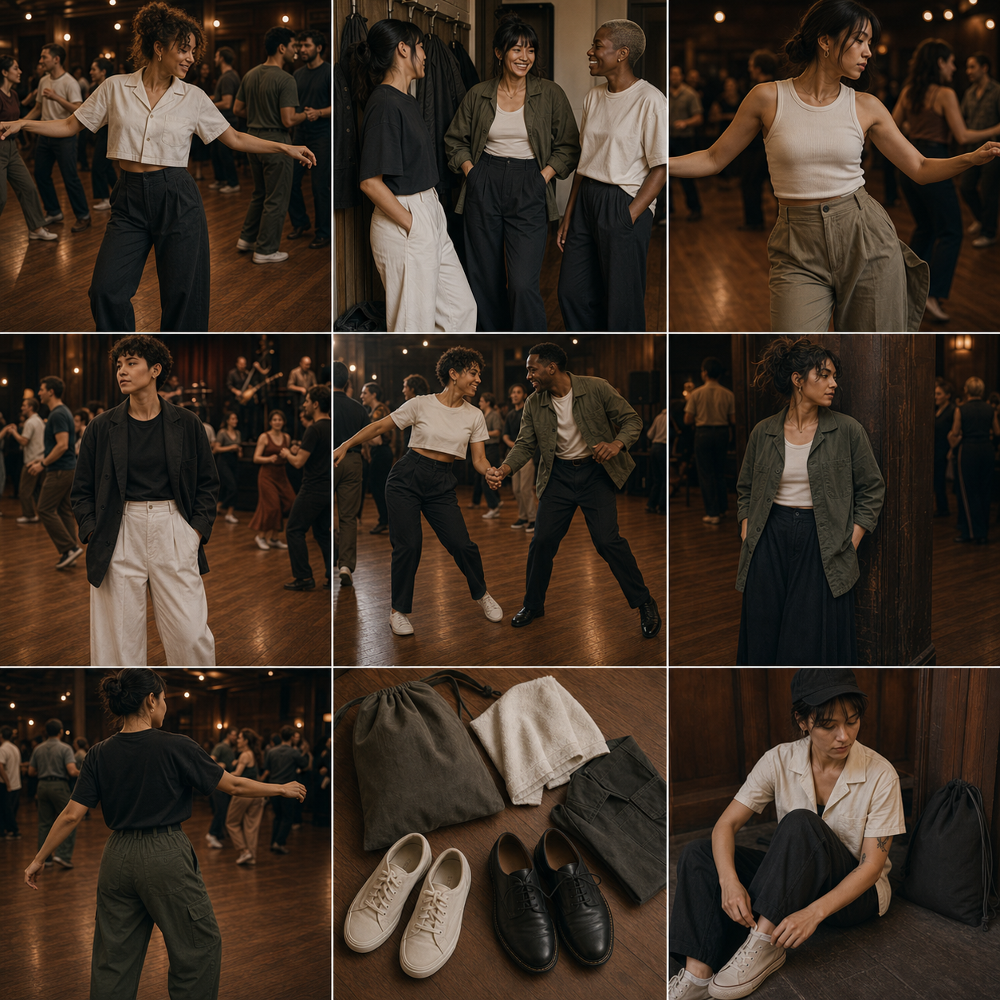
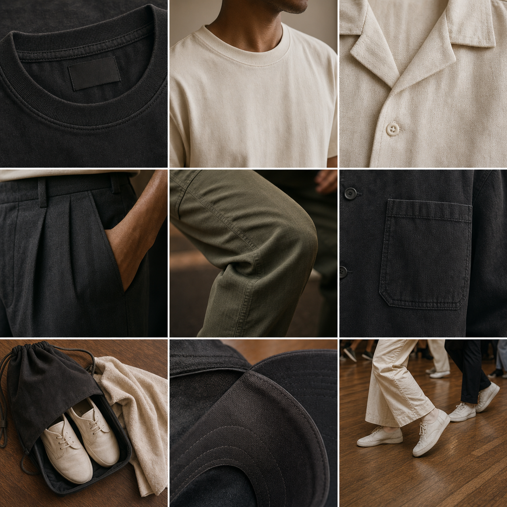
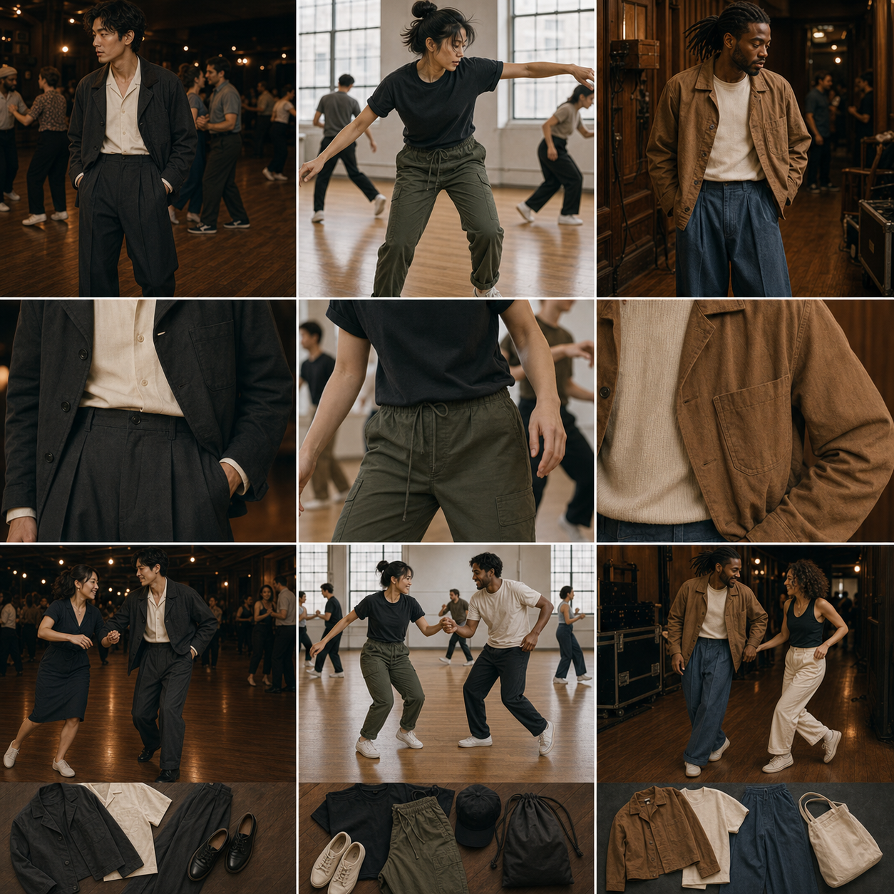

Respect The Root
Use Harlem, Savoy, swing music, improvisation, and social joy as the moral center. Avoid flattening the history into nostalgia or costume.
Working canvas for Josh
A name-free, mark-free lookbook for imagining silhouettes, lifestyle scenes, and blank product zones before final identity, graphics, or legal review.

Taste Thesis
The right line should feel rooted in African American jazz dance history while looking alive in a current-day dance scene. The clothes need to move through practice, travel, changing shoes, late-night socials, and the street outside the venue.
Josh's graphic designs should become selective signals on pieces that already have shape and life. The product should not depend on a logo to feel like it belongs on the floor.
Use Harlem, Savoy, swing music, improvisation, and social joy as the moral center. Avoid flattening the history into nostalgia or costume.
Roomy thighs, cropped layers, breathable cottons, soft collars, clean shoes, and gear that makes sense for dancers moving all night.
Blank zones matter: left chest, back panel, neck label, towel corner, bag front. Josh's designs should feel placed, not pasted.
The wearer should feel like part of a floor, not a billboard. Taste comes from restraint, utility, rhythm, and shared context.
Visual Boards







Three Lanes
Visual role: the sharpest late-night social look.
Pieces: camp collar, cropped jacket, wide pleated trouser, derby, blank back-print tee.
Best graphic zone: small chest mark plus one back story piece.
Visual role: real class and rehearsal gear that still looks intentional.
Pieces: washed tee, ripstop pant, cap, towel, shoe bag, low sneaker.
Best graphic zone: towel corner, bag front, inside label, small sleeve detail.
Visual role: textured, warm, musician-adjacent clothing with memory and hand-feel.
Pieces: chore jacket, textured knit, tobacco overshirt, faded blue trouser, canvas shoe.
Best graphic zone: woven label, subtle embroidery, soft discharge print.
Product Menu
Research Lens
Lindy root: Frankie Manning's path through Harlem rooms and the Savoy points to movement innovation, improvisation, music, and joy as the real center, not decoration. Contemporary global scenes show the dance is still taught, social, and international.
Fashion extraction: Wales Bonner suggests cultural research plus tailoring and sportswear. Nicholas Daley suggests music, craft, lineage, and community. Bode suggests textile memory. Martine Rose suggests subculture and proportion. Fear of God suggests restrained uniform language. Aimé Leon Dore suggests complete world-building around clothes, place, and social ritual.
Do Not Build